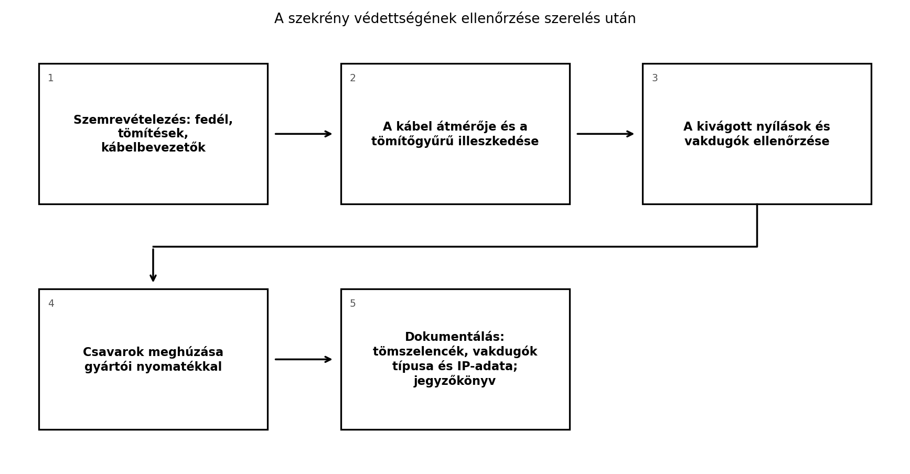

Statikus változat (mint a PDF-ben)
A kapcsolószekrényt nem légüres térbe szereljük. Egy kültéri elosztó naponta ki van téve esőnek, hónak, pornak, a nyári tűző napon belül a hőmérséklet meghaladhatja a készülékek üzemi határát, télen pedig páralecsapódás okozhat zárlatot. Egy poros asztalosműhelyben a finom fűrészpor a hűtőventilátor nyílásán át a szekrénybe jutva lerakódik a meleg készülékeken és a gyűjtősíneken; éghető por, ezért tűzveszélyt jelent, nedvesen pedig kúszóáramot is okozhat. A megfelelő védettség nem kényelmi kérdés: érintésvédelmi, hő- és tűzvédelmi feltétel, és a szerelőnek a helyszíni körülmények alapján kell kiválasztania a szekrényt és a szerelési módot.
Az elosztószekrény védettségét a burkolat jelölése mondja meg. Az IP- és IK-kódok a szerelő számára rövid, szabványos nyelvet adnak, hogy megítélje, hol használható az adott szekrény. A védettségi fokozat azonban csak annyiban igaz, amennyiben a szerelés során megőrizzük: a ki nem használt kábelbevezetők, a rosszul illeszkedő tömszelence és a deformálódott ajtótömítés egyaránt lerontja a gyári IP-fokozatot. Az alábbi ábra azt a folyamatot mutatja, amelyet szerelés után követni kell ahhoz, hogy a védettség ne csak a papíron maradjon meg.

A folyamatban minden lépés arra irányul, hogy a burkolatot a gyári állapotnál ne gyengébbé tegyük. Aki a kábelbevezetést sietősen intézi, később zárlatot, szigetelési hibát vagy érintésveszélyt okoz.
Definíció. Az IP-kód (International Protection, régebben Ingress Protection) a villamos gyártmányok burkolata által nyújtott védettség szabványos jelölése. Két számjegyből áll: az első számjegy a szilárd idegen testek és a por behatolása elleni védelmet, a második számjegy a víz behatolása elleni védelmet jelzi. A kód kiegészítő betűket is tartalmazhat, amelyek pontosítják a védelmet.
A gyakori első számjegyek:
IP2X: 12,5 mm-nél nagyobb szilárd testek ellen véd (pl.
ujj). Elosztókban legalább ezt szokás kérni, hogy a szigeteletlen
részekhez ne lehessen kézzel hozzáférni.IP3X: 2,5 mm-nél nagyobb eszközök ellen véd (pl. vékony
szerszám).IP4X: 1 mm-nél nagyobb testek ellen véd (pl. csavarhúzó
hegye, drót).IP5X: por ellen véd (nem teljesen portömör, de a bejutó
por nem akadályozza a működést és nem veszélyezteti a biztonságot).IP6X: teljesen portömör.A második számjegyek közül a legfontosabbak:
IPX0: nincs vízvédelem.IPX1: függőlegesen lecsapódó vízcseppek ellen véd.IPX2: függőlegesen csepegő víz ellen véd, ha a burkolat
legfeljebb 15°-kal meg van döntve.IPX3: 60°-ig terjedő szögben eső víz ellen véd.IPX4: fröccsenő víz ellen véd bármely irányból.IPX5: fúvókával, több irányból irányított vízsugár
ellen véd.IPX6: erős vízsugár ellen véd.IPX7: átmeneti (30 perces) vízbe merítés ellen véd,
legfeljebb 0,15–1 m mélységben, a szabványban rögzített módon
(ellenőrizendő: pontos feltételek).IPX8: tartós vízben történő merítés ellen véd, a gyártó
által megadott feltételekkel.Ha egy számjegyet nem kell megadni (nem vizsgálták, vagy a
felhasználás szempontjából nem lényeges), a helyére X kerül
(pl. IP2X, IPX4; ellenőrizendő: MSZ EN 60529).
Ez nem azonos a 0-val: a 0 azt jelenti, hogy
az adott hatás ellen nincs védelem (pl. IP20 – víz ellen
nem védett, míg az IP2X a vízvédelemről semmit nem állít).
A kiegészítő betűk közül a gyakorlatban előfordulnak:
A, B, C, D: a
veszélyes részekhez való hozzáférés elleni védelem (rendre kézfej, ujj,
szerszám, huzal), ha az nagyobb, mint amit az első számjegy jelez.H: nagyfeszültségű készülékre utal.M: mozgó részek (pl. forgó motor) ellenőrzése a
vízvédelem vizsgálatakor.S: álló helyzetre vonatkozó vízvizsgálat.W: időjárásálló.A teljes táblázatot az aktuális szabvány tartalmazza; a fenti felsorolás a villanyszerelői mindennapokban elegendő tájékozódásra.
Definíció. Az IK-kód a burkolatok
mechanikai ütésállóságát jelöli. Két számjegyből áll, és a ráeső,
meghatározott energiájú ütések elviselését fejezi ki. Például
IK07 azt jelenti, hogy a burkolat kb. 2 J ütési energiát
visel el, IK10 pedig kb. 20 J-t (ellenőrizendő: a pontos
energia- és tömegadatokat az MSZ EN 62262 tartalmazza).
A magas IK-fokozat olyan helyeken fontos, ahol a szekrényt targoncák, kéziszerszámok, labdák vagy vandalizmus érheti. Ipari csarnokokban, közlekedőutak mellett, iskolákban, kültéri berendezéseknél az IK08–IK10 gyakori követelmény. A törékeny vagy könnyen benyomódó ajtóburkolat hiába teljesíti az IP65-öt, ha egy ütés után a fedél réseket nyit, és a védettség megszűnik.
Szabvány. A védettségi fokozatok vizsgálati eljárásait és jelölését a következő szabványok határozzák meg:
A szabványok nemcsak a kódot, hanem a vizsgálati módszert is rögzítik: például az IP54 szekrényeket porvizsgálatnak és fröccsenővíz-vizsgálatnak vetik alá. Az IP-vízsugaras és porvizsgálat laboratóriumi típusvizsgálat, nem a szerelő helyszíni feladata. A szerelő a burkolaton csak a gyártó által megengedett helyen és módon (előkivágás, gyártói szerszám, a burkolat IP-fokozatának megfelelő tömszelence vagy vakdugó) alakíthat ki nyílást; tömítetlen nyílás, szellőzőfurat vagy a falvastagságot gyengítő kivágás lerontja a védettséget, mert a vizsgálati feltételek már nem teljesülnek.
A szekrényt a beépítési hely külső hatásai szerint kell megválasztani. A leggyakoribb kategóriák:
Mosóhelyiségben, konyhában, fröccsenő víznek kitett területen
legalább IPX4 vízvédelem szükséges. Fürdőszobában az
elosztót a 0–2. zónán kívül kell elhelyezni: ezekben a zónákban
kapcsoló- és elosztóberendezés, dugaszolóaljzat nem lehet
(ellenőrizendő: MSZ HD 60364-7-701). Ha a szekrény takarítás során
vízsugárral érintkezhet, az IPX5 gyakoribb. A
páralecsapódás különösen akkor veszélyes, ha a külső hőmérséklet gyorsan
változik, és a szekrényben hideg felületen víz kondenzál. Ilyenkor
fűtőbetét vagy páramentesítő szellőztetés szükséges, és a
kábelbevezetéseket is párazáró tömszelencével kell ellátni.
Famegmunkáló műhely, malom, cementgyár, papírüzem: a finom por
bejutása miatt IP5X (por ellen védett) vagy
IP6X (portömör) szekrényt kell választani. A vezetőképes
por (pl. szénpor, fémpor) különösen veszélyes, mert lerakódva
szigetelési hibát, kúszóáramot okozhat. Ilyen környezetben a por elleni
védekezés mellett a hűtőnyílásokat is úgy kell kialakítani, hogy
szűrővel megtartsák a védettséget, vagy passzív hűtésű, zárt szekrényt
kell alkalmazni.
Kültéren a csapóeső, hó, jég, UV-sugárzás és a hőmérséklet-ingadozás
mind hat. A gyakorlatban legalább IP65, de sokszor
IP66 vagy IP67 burkolatot választanak. Az
UV-álló anyag (pl. üvegszálas poliészter, vagy speciális műanyag)
megakadályozza a burkolat törékennyé válását. A fém szekrényeknél a
kültéri kivitel korrózióálló bevonatot vagy rozsdamentes acélt igényel.
A ferde tető és az alsó él kialakítása segít a víz levezetésében.
Fontos, hogy a kültéri szekrény ajtaja ne nyíljon úgy, hogy a csapóeső
közvetlenül belejusson; a szekrény belsejében elhelyezett részegységek
is legalább a belső csepegő víz ellen védettek legyenek.
A sós, párás levegő gyorsan korrodálja a fém burkolatokat, a csatlakozókat és a sorkapcsokat. Tengerparton, uszodában, vegyi üzemben a rozsdamentes acél (pl. 304 vagy 316), speciális tengerálló bevonat, vagy a nagy vegyi ellenállású poliészter burkolat javasolt. A védőcsavarok, záródások is korrózióálló kivitelűek legyenek. A tömítésekből a klór vagy a sós pár a lágy anyagokat kikezdheti, ezért a gyártó által megadott anyagú, klorid ellen stabil tömítés szükséges. Az elektromos csatlakozásoknál a kontaktpaszták és a bevont érvéghüvelyek a fő védelmet adják.
Robbanásveszélyes térben (festőműhely, vegyi üzem, porleválasztó) az IP-kód önmagában nem elegendő; a készülékeknek Ex-minősítésűnek kell lenniük, a besorolás az MSZ EN IEC 60079 sorozat szerint történik. Ilyen helyen a szekrény anyaga, a kábelbevezetés típusa, a statikus feltöltődés elleni védelem és a gyújtóforrások elkerülése mind külön követelmény. Ez a témakör meghaladja a jelen alfejezet kereteit; aki robbanásveszélyes környezetbe szekrényt tervez, az Ex-szakképzett tervezővel dolgozzon.
A legnagyobb szerelői hibák a védettség lerontásában itt keletkeznek. A szekrénybe bevezetett kábelek átmérője és a tömítőgyűrű belső mérete pontosan illeszkedjen. Ha a kábel vékonyabb, mint a tömítőnyílás, rés marad; ha vastagabb, a gyűrű roncsolódik. A metrikus (M) vagy PG típusú kábelbevezetők kiválasztásánál a kábel külső átmérőjét kell figyelembe venni, nem a vezető keresztmetszetét. A kimaradt nyílásokat vakdugóval kell zárni, ugyanolyan tömítési minőségben, mint a bevezetett kábeleket.
Hogy miért a külső átmérő számít, az a tömszelence felépítéséből látszik. Az alábbi robbantott ábrán felülről lefelé: az 1 záróanya, a 2 rugalmas tömítőbetét, a 3 lamellás szorítókosár, a 4 menetes test hatlappal, az 5 tömítőgyűrű és a 6 ellenanya. Beszerelve a test a ház falán megy át: kívül a hatlap és a fal között az 5 gyűrű zár, belül a 6 ellenanya rögzít. Az 1 záróanya meghúzásakor a 3 kosár lamellái a 2 betétet körben a kábel köpenyére nyomják – ez a tömítés és egyben a húzásmentesítés.
Szereléskor először a testet rögzítsd az ellenanyával (a tömítőgyűrű kívül legyen!), majd fűzd át a kábelt, és csak a végleges helyzetben húzd meg a záróanyát a gyártói nyomatékkal. A tömítőgyűrű elhagyása tipikus hiba: a víz ilyenkor nem a kábel mentén, hanem a menet mentén jut be. A HTML-kiadásban a részekre mutatva azok szerepe olvasható.
Az alábbi tabló a leggyakoribb tömítési hibákat mutatja. Az 1. rajzon a kábel a szorítási tartományban van, a betét körben felfekszik. A 2. rajzon a kábel túl vékony, rés marad; a 3.-on túl vastag, a betét kinyomódik és megsérül. A 4. rajz a vakdugó nélkül hagyott nyílást állítja szembe a lezárttal, az 5. a ferdén, feszülve belépő kábelt, amely oldalról nyitja a tömítést, a 6. a túlhúzott fedélcsavart, amely alatt a tömítés lelapul.

A 2. és a 3. hibát a szerelés előtt lehet elkerülni: mérd meg tolómérővel a kábel külső átmérőjét, és ehhez válassz tömszelencét (szükség esetén szűkítő betéttel). A 6. hibánál a tömítés a csavar meglazítása után sem rugózik vissza, ezért cserélni kell. A HTML-kiadásban egy panelre mutatva megjelenik a hiba oka és a javítás.
A szekrény ajtaját és fedelét a gyártó által megadott csavarnyomatékkal kell zárni. A túlhúzott csavar deformálja a tömítést, a laza csavar pedig nyitott rést hagy. A kábelbevezetésnél a hajlítási sugarak betartása is fontos: a feszülő kábel oldalirányú erőt vihet a tömszelencére, és megszüntetheti annak zárását.
Figyelem. A kültéri szekrény felső részének tömítettsége kritikus. Ha a kábel felülről érkezik, a víz a kábel mentén a tömszelencébe folyhat; ezért a bevezetést alulról vagy oldalról érdemes megoldani, a gyártói előírás szerint. A felülről bevezetett kábel esetén csepegtető hurkot kell kialakítani, és a gyártó által kültérre engedett, legalább a szekrény IP-fokozatának megfelelő tömszelencét kell használni, a gyártói nyomatékkal meghúzva.

Ábraolvasás. Az A rajzon a kábel felülről, lejtve érkezik a tetőn lévő tömszelencébe: az esővíz a kábel köpenyén lefolyik, és az elöregedett tömítésen át a készülékekre jut. A B rajzon a kábel alulról érkezik, a nem használt nyílás vakdugóval zárt; ha felülről kell bevezetni, az U-alakú csepegtető hurok mélypontján a víz lecsöpög, mielőtt a tömszelencéhez érne. A kinagyítás azt mutatja, hogy a tömítőgyűrű csak akkor zár, ha a kábel külső átmérője a tömszelence szorítási tartományán belül van (például M25-nél 10–17 mm – gyártói adat, ellenőrizendő). A HTML-kiadásban az ábra három lépésben játszható le: hibás állapot, a víz útja, javított állapot.
A szekrénybe szerelt készülékek veszteségi hőt termelnek. Ha a burkolat teljesen tömített, a hő nem távozik, és a belső hőmérséklet emelkedik. A gyártói adatlapok megadják az üzemi hőmérséklet-tartományt (pl. -25 °C … +40 °C, ellenőrizendő). A hőelvezetés négy alapmódja:
A túl alacsony belső hőmérséklet páralecsapódást okozhat: ha a szekrény hidegebb a környező levegőnél, a nedvesség kicsapódik rajta. Ezért fűtőbetétet építenek be, főleg kültéri vagy hőmérséklet-ingadozó helyeken. A fűtőbetétet úgy kell méretezni, hogy a belső hőmérséklet legalább a környezeti harmatpont felett maradjon. A páralecsapódás ellen gyakran páramentesítő szellőzést is alkalmaznak.
Tünet. Kültéri kerti elosztóban a FI-relé (áram-védőkapcsoló) naponta többször leoldott, főleg eső után. A szekrény papírja IP65 volt, de a szerelő sokadszor sem találta a hibát.
Hipotézis. A szekrénybe víz jut, vagy a páratartalom kúszóáramot okoz.
Mérés. A szerelő feszültségmentesítette az elosztót (öt szabály), kinyitotta a szekrényt, és szemrevételezéssel ellenőrizte. A fedél tömítése jó állapotúnak tűnt. A kábelbevezetéseket vizsgálva azt látta, hogy a felülről, a tetőn bevezetett tápkábel tömszelencéjének külső peremén vízcseppek ültek, a belső gumigyűrű pedig elöregedett, repedezett. A kábel lejtése úgy hozta a vizet, hogy az lassan a szekrénybe csorgott. A szigetelési ellenállás mérése a leszerelt készülékek leválasztása után is alacsony értéket mutatott a beázott sorkapocs környékén (ellenőrizendő: a mérési határérték a szabvány szerint).
Ok. A bevezetés felülről, csepegtető hurok nélkül történt, és a tömítőgyűrű elvesztette rugalmasságát. A szekrény IP65 minősítése nem volt érvényes a szerelés után.
Javítás. A kábelt áthelyezték alsó bevezetésre, a régi nyílást vakdugóval zárták. A tömítőgyűrűt új, gyártó által megadott anyagúra cserélték. A vizes sorkapcsot kiszárították, a kötéseket megtisztították, a szigetelési ellenállás helyreállt. A FI-vizsgálat és a hurokimpedancia-mérés rendben volt.
Megelőzés. Kültéri szekrényeknél mindig a gyártói kábelbevezetési útmutatót kell követni: alsó vagy oldalsó bevezetés, csepegtető hurok, megfelelő méretű tömítőgyűrű, a kimaradt nyílások vakdugózása és rendszeres ellenőrzés.
A szekrény IP-fokozatát a szerelés után lerontani. A gyártó által nem engedett helyen lyukat fúrnak a burkolatba, vagy a nyílást nem tömszelencével, hanem csupasz kábelbevezetéssel oldják meg. Így a gyári védettség semmivé válik. Helyes gyakorlat: a kivágott nyíláshoz mindig megfelelő tömített átvezetőt, vakdugót vagy tömszelencét szerelni.
A kábelátmérő és a tömítőgyűrű méretének rossz párosítása. A túl vékony kábel a gyűrűben rést hagy, a vastag kábel kinyomja. Helyes: a kábel külső átmérőjére illeszkedő bevezetőt választani, szükség esetén redukáló gyűrűvel.
A szekrény környezeti besorolásának figyelmen kívül hagyása. Beltéri, IP30-as szekrényt szerelnek be kültérre, mert a katalógusban olcsó volt. A víz és a por bejut, zárlatot vagy érintésveszélyt okoz. Helyes: a helyiség külső hatásai szerint kiválasztani a burkolatot, és az IP/IK mellett a korrózió-, UV- és hőmérsékleti követelményeket is nézni.
Mit jelent az IP54?
Válasz: 5 = por ellen védett (nem teljesen
portömör, de a bejutó por nem okoz hibát), 4 = bármely
irányból fröccsenő víz ellen védett.
Milyen IK-fokozat szükséges ott, ahol targonca ütközhet a
szekrénynek?
Válasz: Nagy ütési energiát elviselő, például IK08–IK10
burkolat, a helyszíni kockázatbecsléstől függően.
Miért kell a kimaradt nyílásokat vakdugóval zárni?
Válasz: Mert a védettséget nemcsak a kábelbevezetők,
hanem a burkolat minden nyílása adja; a nyitott furat por- és
vízbehatolást, érintésveszélyt okoz.
Igaz vagy hamis? Ha egy szekrény IP67, akkor bármilyen kültéri
környezetbe jó, és nem kell tömítésre figyelni.
Válasz: Hamis. Az IP67 a merülést is elviseli, de ha a
szerelés során a tömszelencét elrontjuk, vagy a fedelet deformáljuk, a
gyári védettség már nem érvényes. A korrózió és az UV-állóság külön
kritérium.
Mi a különbség az IPX5 és az IPX7 között?
Válasz: Az IPX5 a több irányból érkező vízsugarat
bírja, míg az IPX7 az átmeneti vízbe merítést. A kettő nem egymásból
következik: egy IPX5-ös szekrény nem feltétlenül IPX7-es, és fordítva. A
gyártó adatlapja mondja meg a pontos vizsgálati feltételeket.
1. feladat (A)
Adja meg az IP65 kód mindkét számjegyének jelentését, és nevezzen meg
egy olyan környezetet, ahol ez a szekrény jól használható.
2. feladat (A)
Egy beltéri, poros asztalosműhelybe elosztószekrényt kell választani.
Írja le, milyen IP-fokozat lenne a minimum, és indokolja meg, miért.
3. feladat (B)
Két szekrényt hasonlít össze: az egyik IP54, a másik IP66. Melyiket
választaná kültéri, szabadban álló elhelyezésre, ahol eső és hó éri, és
miért? Milyen IK-fokozatot tenne hozzá, ha a szekrényt targonca is
megközelítheti?
4. feladat (B)
Egy szekrénybe felülről vezetnek be egy kábelt, csepegtető hurok nélkül.
Rajzolja le a hibát, és írja le, hogyan kell helyesen megoldani a
bevezetést. (A rajzot szövegesen is megadhatja: hol van a szekrény, hol
érkezik a kábel, mit teszünk.)
5. feladat (C)
Kültéri szekrényben a hőmérséklet nyáron eléri a 60 °C-ot, és a
kismegszakítók melegedés miatt leoldanak. Milyen éghajlati szabályozást
választana, hogy a védettség továbbra is IP65 maradjon? Indokolja, miért
nem elegendő pusztán szellőzőnyílásokat vágni a szekrénybe.
6. feladat (D)
Egy ügyfél szekrénye folyamatosan leoldó FI-relé hibával küzd.
Feltételezzük, hogy a hiba a szekrényben lévő kábelbevezetésnél van.
Sorolja fel az öt biztonsági szabályt, majd írja le, milyen
vizsgálatokat végez a szerelő, és mi a helyes javítás.
1. feladat (A)
IP65: 6 = por ellen teljesen tömített, 5 =
fúvókával, bármely irányból irányított vízsugár ellen védett. Kültéri,
időjárásnak kitett szekrényhez jó, de UV- és korrózióállóság is
szükséges.
2. feladat (A)
Minimum IP54: 5 = por ellen védett,
4 = fröccsenő víz ellen véd. Poros műhelyben a bejutó por
nem károsíthatja a készülékeket; a vezetőképes por esetén IP6X ajánlott.
Az éghető por (például fűrészpor) miatt a műhely tűzveszélyes
környezetnek minősülhet: legalább IP5X burkolat, a készülékek felületi
hőmérsékletének korlátozása és rendszeres portalanítás szükséges
(ellenőrizendő: MSZ HD 60364-4-42, -5-51, OTSZ).
3. feladat (B)
Kültérre az IP66 jobb, mert erős vízsugár ellen is véd, és a teljesen
portömör kivitel csökkenti a belső szennyeződést. Az IP54 inkább
beltéri, fröccsenő vízzel érintett helyszínre való. Targonca esetén
IK08–IK10 közötti mechanikai ütésállóságot kell választani, a várható
ütési energia függvényében.
4. feladat (B)
Hiba (vö. a kábelbevezetés ábrájának A
részével): a kábel felülről, lefelé lejtve érkezik, a víz a kábel mentén
a bevezetőhöz folyik. Helyes: alulról vagy oldalról bevezetni, a
felülről érkező kábelnél csepegtető hurkot (U-alakot) hagyni, hogy a víz
a mélyponton lecsepegjen, majd a kábelt a szekrény IP-fokozatának
megfelelő tömszelencével, a gyártói nyomatékkal rögzíteni.
5. feladat (C)
Ha a védettséget IP65-ben kell tartani, szellőzőnyílásokat nem
vághatunk, mert azok rontják a por- és vízvédelmet. Megoldás: aktív
hűtőgép vagy passzív hőcserélő, amelyek a belső hőt a külső levegővel
keveredés nélkül vezetik el. A hűtőgép külső egysége IP65, a hűtőbetét
pedig gyárilag a szekrénybe illesztett. Télen páralecsapódás ellen
fűtőbetét szükséges. A méretezést a készülékveszteség és a megengedett
belső hőmérséklet adja (gyártói adatlapok).
6. feladat (D)
Öt biztonsági szabály: 1) lekapcsolás, 2) visszakapcsolás elleni
biztosítás, 3) feszültségmentesség ellenőrzése, 4) földelés és
rövidrezárás, 5) szomszédos feszültség alatti részek lefedése. A szerelő
ezután feszültségmentes állapotban kinyitja a szekrényt, szemrevételezi
a kábelbevezetéseket, megnézi a tömítőgyűrűk állapotát, a csavarok
meghúzását. Szigetelési ellenállást mér a gyanús áramkörön (a készülékek
leválasztása után), ellenőrzi, hogy a kábel melyik irányból érkezik,
van-e csepegtető hurok. Ha a tömítés repedt, cseréli, a kábelt áthelyezi
alsó bevezetésre, a nyílásokat vakdugózza, majd a FI-vizsgálatot és
hurokimpedanciát mérve ellenőrzi a javítást.
A kapcsolószekrény védettsége két kóddal jellemezhető. Az IP-kód (MSZ EN 60529) első számjegye a szilárd testek és a por, második a víz elleni védelmet adja; kiegészítő betűk (A–D a hozzáférés elleni védelem, H, M, S, W további információk) pontosítanak. Az IK-kód (MSZ EN 62262) a mechanikai ütésállóságot jelzi. A szekrényt a beépítési hely külső hatásai szerint kell választani: nedves, poros, kültéri, tengerparti és robbanásveszélyes környezetben más-más követelmény érvényes, a korrózió, UV, hőmérséklet és páratartalom együttes figyelembevételével. A gyári védettséget minden szerelői beavatkozás, főként a kábelbevezetés, a tömítés és a fedelet rögzítő csavarok meghúzása befolyásolja: a kimaradt nyílásokat vakdugóval, a kábeleket méretpontos tömszelencével kell szerelni. A klimatizálás célja a belső hőmérséklet és pára szabályozása úgy, hogy a védettség ne romoljon; szűrőventilátor, hőcserélő vagy hűtőgép használható. Továbbvitt eredmény. Az IP- és IK-kód ismerete szükséges a Mérő- és jelzőkészülékek, feliratok és dokumentáció alfejezethez: a feliratoknak és készülékeknek is megfelelő védettségű burkolatban kell maradniuk, és az adott környezetben olvashatóknak kell lenniük.
Az IP-kód (MSZ EN 60529), az IK-kód (MSZ EN 62262) és a kapcsolóberendezések (MSZ EN 61439, MSZ HD 60364-5-51) hivatkozásainak aktuális kiadását, az AD/AE külső hatás kódokat, az Ex-besorolás részleteit (MSZ EN IEC 60079 sorozat) és a megadott hőmérséklet-tartományokat a kiadás előtt ellenőrizni kell (ellenőrizendő: kiadások, gyártói adatlapok). Az IP-fokozat helyszíni igazolása nem szerelői feladat: a gyártói utasítás és a dokumentáció a mérvadó.